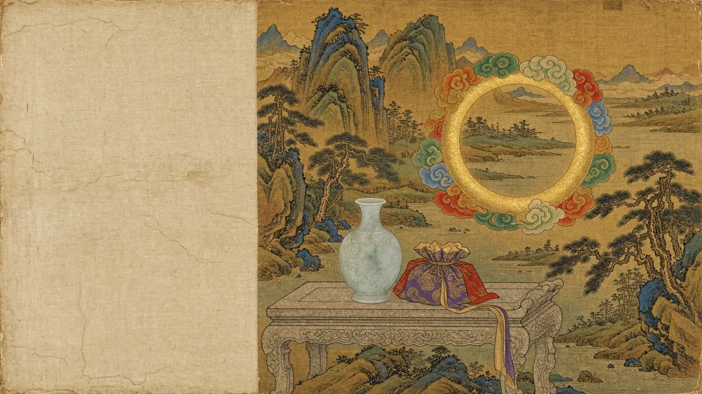
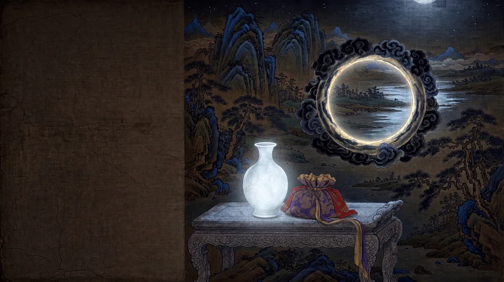

西游渡 · 第十九讲


轨标：个人创作 来源：主题四.txt 章节 "西游渡 · 第十九讲" W285（git 创建提交溯源 · W424 回填）
牛虻——青牛背上的旁观者
导语
金兜山事件在天庭档案里被记为“青牛窃宝案”，卷宗归档之后再也没有人翻过。所有当事人——老君、悟空、青牛、天兵天将——各自回到了各自的轨迹上。金兜洞塌了半边，南坡松林被天火烧成焦土，土地公还在山上种树。这个故事已经讲完了。
但还有一双眼睛，没有人注意到。
它不是神仙，不是妖怪，不是人。它是一只牛虻。
牛虻，虻科，双翅目，吸血的。它这辈子只叮过一头牛——太上老君的坐骑青牛。它在青牛耳朵根后面住了很久，从兜率宫到金兜山，从金兜山回兜率宫，它一直在那里。青牛不知道它——它的口器太细太轻，刺进牛皮时青牛只觉得耳根有点痒，甩一下尾巴，扫不到，就算了。它吸青牛的血，一顿吸血量极小，小到青牛的血液总量感觉不到任何变化。但它活了下来，代代繁衍。它是金兜山事件唯一从头看到尾的旁观者——不是站在云头上看的，是趴在牛耳根后，隔着牛毛的缝隙，用复眼里几千只小眼拼出整个世界。
一、兜率宫的日常
它出生在兜率宫。它妈把它产在老君丹房的窗棂缝里——窗棂是昆仑木的，木质极密极硬，在丹炉的热气里烘烤了很多年，木头里的树脂全烤干了，只剩极细极韧的木纤维。蛆从卵里孵出来时极细极小，白生生的，在木纤维之间啃出一条极细的甬道，一路啃一路蜕皮，蜕了三次，最后在窗棂最深处化蛹。蛹壳是琥珀色的，极薄极透，隔着壳能看见里面蛆的体节在慢慢熔化成牛虻的身体结构——复眼、口器、翅膀、六条腿。它破蛹那天兜率宫极安静，老君正坐在丹房蒲团上闭目养神，丹炉里的火压到文火，炉砖缝里漏出来的火光在墙上投出一圈一圈极淡的暗红波纹。青牛卧在丹炉旁边反刍，嘴里嚼着早上吃剩的灵芝渣，耳朵极缓慢地前后扇动，扇得极有规律——每呼吸三次扇一下。新生的牛虻从窗棂缝里爬出来，翅膀还没干，贴在背上极皱极软。它爬上窗台，爬上青石地砖，爬上青牛卧倒时摊在地上的尾巴尖，顺着尾巴往上走。尾巴、后腿、腰胯、脊梁、肩胛、脖子、耳朵。它最后停在了青牛左耳根后面——那里有一小块没有牛毛的裸皮，皮极薄，毛细血管极密，隔着皮肤能闻到血里的灵芝味。它把口器刺进裸皮，青牛觉得耳根有点痒，甩了一下耳朵。它被耳朵扇起的风扇得往后一个趔趄，六条腿全趴在牛毛上抠得极紧。然后它喝到了第一口血。热的。比丹炉的热更温和，比蒲团的麻更细腻。
二、下界
青牛精下界那晚，兜率宫极乱。青牛用角挑断了拴牛的石柱，用金刚琢套断了鼻环，把老君的道袍、拂尘、竹简、紫金葫芦全叼的叼背的背，从兜率宫后门溜了。牛虻趴在它耳根后，被扑面而来的狂风压得翅膀全贴在后背上，六条腿死死抠着牛毛。它不知道青牛在做什么，只知道脚下的皮肤温度变了——在兜率宫时极恒定极温吞，像被丹炉恒温包浆的老玉；现在忽冷忽热，穿过云层时极冷，牛毛上凝了一层极薄的霜，霜花在它复眼里全是银白色六角形晶体；俯冲下界时极热，牛毛被气流压得全倒向同一个方向，把它埋在牛毛深处，倒伏的毛杆压住了它半边翅膀，翅脉里的血淋巴暂时断流，翅尖发麻。
青牛在金兜山落地时，它从他耳根后探出头来。金兜山的空气和兜率宫完全不一样——兜率宫的空气极干燥，被丹炉烘了几千年，水分极低，它用来呼吸的气孔一直有点干；金兜山的空气极湿极凉，水汽从山涧里漫上来，穿过松林，裹着极淡的松脂味。它的气孔全张开了，第一次不用省着用呼吸。青牛用金刚琢拓宽洞口时，碎石横飞，一块碎石从洞口飞溅过来，差点砸在它身上。青牛忽然把头偏了一下——不是躲石头，是用那只耳朵替它挡住了。碎石弹在牛耳边缘，弹飞了。牛虻趴在耳根后，不知道青牛是不是故意的。只是从那天起，它就再也没离开过左耳根——它觉得这块极小的裸皮是三界最安全的地方。
三、围观
金兜洞住下后，青牛每天趴在洞里最深处干草堆上。金刚琢套在角根上，白森森的琢圈在幽暗的洞府里极亮极静——它本身就是浑钢万锻的锻件，不会发光，但会在金兜山的水汽和地脉灵气里微微嗡鸣，嗡鸣声极低极沉，像有人在洞极深处敲一口铜钟。牛虻感觉到那股嗡鸣。嗡鸣不是通过空气传进它听觉——牛虻没有耳朵，它是通过足部跗节上的感觉毛感知振动。它趴在青牛耳根后，隔着牛毛，隔着皮肤，隔着颅骨的骨壁，感觉到金刚琢的琢圈在极缓慢地旋转。琢圈和角根骨质之间极细微的摩擦产生出极低频的振动，顺着角心骨质往颅骨传，从颅骨传到耳根，从耳根传到它六条腿的跗节。它觉得那振动很舒服——极稳极沉，像老君在丹炉旁边敲打太极的生铁淬火，每一下都震进骨头里。
悟空来叫阵那天，金兜洞口极吵。牛虻从牛毛缝隙里看见一只毛脸雷公嘴的猴子举着棒子站在云头，棒身极亮极烫，它隔着老远就能感觉到那根棒子上散发出来的热量——不是温度，是灵力。在兜率宫时它见过老君给金箍棒淬火，淬火时棒身极热，冷却后棒身上会多出一道极细的暗纹，它在青牛耳朵上见过那种暗纹淬火时迸发的短暂白光。现在那根棒子上的纹路在夕阳下闪闪发光，每一道纹路都是它眼里的光。
悟空和青牛打起来了。青牛从洞里冲出去，牛蹄踏得地动山摇——不是夸张，金兜山的地脉被这一蹄踩得极剧烈地震了一下，震波把土地庙供桌上的核桃震掉了两颗。牛虻被晃得六条腿全快扒不住牛毛，它在牛耳根后换了姿势，把头埋进那丛柔软的耳根绒毛里，把腹部抬高，让身体和牛的皮肤之间形成一个小到不能再小的空气垫，靠这个空气垫在牛的剧烈跑动中保持平衡。
金刚琢第一次使用时，它听到了一种极奇特的声响。那是琢口张开时套内真空瞬间吸入空气的啸叫，极高亢极尖锐，像有一根极细的钢针从耳膜里往外穿，刺得它全身刚毛全竖了起来。然后是兵器入琢的撞击声——金箍棒、九齿钉钯、降妖宝杖、火轮、水盂、金刚杵，一件接一件被吸进金刚琢里，每吸进一件，金刚琢就在牛角根上极剧烈地震一下。那震动极猛极脆，顺着角骨质传进颅骨，整个牛头嗡嗡响，青牛每接一件兵器就闷哼一声——不是疼，是震得脑仁发麻。但他在笑。他第一次用金刚琢接住金箍棒时，他在笑——咧着牛嘴，露出牙槽骨上一排极平的臼齿。牛虻感觉到青牛耳根后面的皮肤抽动了一下——那是笑纹牵动了耳廓肌，极细微极短促，但它在耳根上住了这么久，能分辨出青牛皮肤的每一种抽动：痒是极快极轻的抽搐，怒是极慢极深的紧绷，笑是又快又深的连抽两下。这两下它从来没感觉到过——在兜率宫那么多年，青牛从不笑。
四、回家
老君来那天，金兜山的空气极沉极静。天兵天将退干净了，金兜洞口的碎石堆上只剩悟空一个人蹲在那里，金箍棒靠在肩膀上，棒身还带着刚从金刚琢里吐出来的余温。老君骑着一匹极瘦极老的青驴从云头上降下来。牛虻认得太极——它极破极旧，座板上包浆已经厚到看不出木质纹理；它在兜率宫的柴房里见过这辆驴车，驴极老极瘦，和太极一样老，老君平时极少用它，除非是去极远极偏的地方。
老君从驴背上下来，缰绳搭在驴脖子上。他先看的不是金刚琢，是青牛的鼻子。鼻中隔上那道金刚琢断鼻环时划出的血口子还没完全愈合，结了一层极薄的暗红色血痂，血痂边缘已经翘起来了一点，露出底下新生的嫩粉色皮肤。老君从袖子里掏出新鼻环时，牛虻闻到了那截木头的味道——不是老君身上常有的丹砂味，是极新鲜的木香，极淡极清，和老君书房里竹简的檀香味不同。老君把木鼻环穿进青牛鼻孔，牛虻趴在耳根后，感觉到青牛鼻中隔上的肌肉极轻微地痉挛了一下——不是疼，是紧张。每次老君要骑他出门前，他都会先紧张一下，怕自己脚程不稳把老君颠下来。
老君骑上青牛往山下走。青牛的跛蹄踩在石阶上极轻极慢——他左后蹄被天兵雷符擦掉的那一小块蹄甲还没长好，踩在石头上有点疼，每踩一步左后腿就在空中极短促地顿一下。老君坐在牛背上，身体随着跛蹄的节奏极轻微地一偏一偏，偏了七步之后他用脚跟极轻地碰了一下青牛右腹——不是催他快走，是告诉他，我知道你跛，不赶时间。
牛虻趴在耳根后，忽然觉得青牛的皮肤松弛下来。不是走累了的松——是回了家的松。它在兜率宫住了那么久，认得这种松弛。每晚青牛卧在丹炉旁边反刍时，皮肤就是这样松的——松到几乎要从骨头上流下来，牛毛根根软倒，贴在皮肤上。
五、废弃的巢
很多年后，兜率宫，老君的丹房还是那么热、那么干、那么安静。窗棂上密密麻麻全是牛虻的空蛹壳——那是代代牛虻在这根昆仑木上繁衍留下的遗迹，蛹壳极薄极透，在丹炉的红光里映出极小极淡的琥珀色。
青牛卧在丹炉旁边反刍，耳朵极缓慢地前后扇动。他老了。毛稀了，皮松了，耳根后面那块裸皮已经不再光滑——长了极细极密的皱纹，一圈套一圈，像老树的年轮。那只牛虻的最后一代后代还趴在那里——一只极小的牛虻，刚羽化，翅膀还没干透。它不知道自己家族的来历，不知道很多年前自己的祖先跟着这头牛下过一次凡，看过一场漫天飞舞的星火，看见过一只猴子蹲在石头上往兜率宫的方向望——那是悟空打赢了这一仗之后目送老君和青牛离去的背影。它更不知道自己祖先的口器曾经喝过这头牛的血——血里有兜率宫的灵芝渣、金兜山的松脂灰，还有这头牛在三界之间翻腾穿梭时从骨髓里震出来的星尘。
它只知道青牛老了。老到耳根后面的皮肤越来越薄，血管越来越脆，血管里的血流速度比以前慢了，血味和以前不太一样了——血里多了极微量的铁锈味，不是病了，是老了。它知道老牛的耳朵还是像从前一样极有规律地扇动——扇风的节奏是每呼吸三次扇一下。它觉得那节奏极舒服，翅膀还没干，它就在一扇一扇的微风里慢慢睡着了。
青牛反刍时，把灵芝渣嚼得极细极碎，舌头在口腔里极缓慢地搅动，灵芝渣的残渣黏在臼齿上，他用嘴角极轻微地磨了一下牙。那动作和多年前在金兜山接住金箍棒时、棒身震得脑仁发麻时咧嘴大笑一模一样，只不过这次嘴角是垂着的。不是不开心——是老了的牛笑不动了。然后他把身体慢慢歪倒——小心地先用左前蹄跪地，再把整个身体沉下去，卧倒在丹炉旁边。丹炉的炉火从八卦炉门的缝隙里漏出来，落在青牛身上，把他半边身子映成极淡极暖的铜红色。他睡着了。在梦里他还在金兜山——不是在打架，是在山涧里喝水，金兜山的山溪极清极凉，水里有一种极小极透明的虾子，他在溪边喝水时虾子从水面滑进他鼻孔，痒得他打了个惊天动地的喷嚏。他在梦里把右前蹄抬起来想揉鼻子，但卧倒的身体在现实里只是把前蹄极轻极慢地抽搐了一下，蹄尖在丹房地砖上磕出一声极轻极钝的响。
牛虻被这响动从翅膀下惊醒，它从耳根后探出头来。丹炉里的火正慢慢暗下去，从暗红变成灰红，变成灰，最后只剩极微弱极短暂的一闪一闪——那是炉砖缝隙里残留的金刚琢碎屑在炉膛的余温里发出最后的磷光。老君从蒲团上站起来，把道袍披在青牛身上，拍了拍牛脖子，说，牛儿，睡吧。他弯腰把丹炉的炉门推严，炉砖的缝隙对合时发出极细极沉的摩擦声——那声音和很多年前金兜山土地用锄头在焦土上凿松子孔一模一样。
渡口问答
问：一只牛虻的故事值得这样写吗？
答：它喝过兜率宫的血，那是灵芝喂养的神牛之血，血里有太上的丹药余温，有炉膛一万年不灭的劫灰。它趴在牛耳根后，隔着青牛颅骨，听过金刚琢套走金箍棒时琢圈在骨壁上振出的嗡鸣——那是浑钢万锻的至宝被撞响时独一无二的啸叫。它目睹了取经路上最不讲道理的一战——所有兵器法宝全被套走，无一幸免。它也看到了结局——老君用一根随手折的树枝做了新鼻环，牵牛回家。没有人知道老君为什么来那么晚，只有牛虻知道——它闻到青牛发抖时皮肤上渗出的不是恐惧的气味，是后悔。老牛是想家了。他不是真想当山大王。他就是想试试在草地上打滚而不是永远卧在丹炉旁边。牛虻知道，它什么都知道。但牛虻不会说话。三界的战史里没有它的位置。但它存在过。它的存在本身就是对“主角”的否决——历史不需要只由英雄书写，一只趴在牛耳根后面的牛虻，照样可以见证一切。
问：青牛回了兜率宫之后，牛虻家族还在他耳朵上吗？
答：还在。代代都在。青牛耳根后面那块裸皮现在已经是牛虻家族的祖宅——每一代牛虻都在那里羽化，在那里喝第一口血，在那里生下一代。它们不搬家，因为这头牛耳朵扇风的节奏是独一无二的——每呼吸三次扇一下，这节奏在牛虻的跗节感觉毛里是最舒服的低频振荡，像老君敲打太极的生铁淬火，每一下都震进骨子里。青牛老了之后耳朵扇得比以前慢了很多，牛虻后代也跟着进化出更耐久的跗节肌肉——老的扇一次够它们站稳，新的扇太快它们反而不习惯。青牛不知道有这回事。他只是偶尔在夏天耳根极痒时甩一下耳朵，然后想起很多年前在金兜山也甩过一次，那次是悟空的金箍棒砸过来时气流擦过耳朵让他猛地缩了一下。甩完，他继续反刍，耳朵又回到那慢悠悠的节奏里。牛虻从他耳毛里探出头，抖掉身上被甩落的皮屑——脚底极稳。
问：它觉得金兜山和兜率宫有什么不同？
答：最大的不同：金兜山有水。金兜山山涧里那几条极细极清的溪，溪底有极小的透明虾子——它没眼睛但能感觉到那些虾子在水中极轻微地弹尾，弹尾时产生极细的脉冲，脉冲穿过水面传进空气再传到它刚毛，它觉得那脉冲极凉极甜。它在兜率宫一辈子没见过水——兜率宫极干极热，老君炼丹不用水，老君喝的是甘露。它家族代代在干燥的木纤维里啃甬道、化蛹、羽化，翅膀从蛹壳里抽出来时必须抢在蛹壳被丹炉烤脆之前展开，否则翅脉会烤焦。金兜山不同，山涧里的水汽极丰沛，它第一次感觉到自己翅膀可以完全展开不必担心脱水。它后来在青牛耳根后产卵，卵壳比祖辈在兜率宫产的稍微薄了一点点——因为金兜山的空气湿度让卵壳不需要那么厚，省下来的几丁质留给下一代幼虫啃木纤维用。很久以后，青牛回到兜率宫，它带回去的牛虻后代也回到了干燥里。但那一代在金兜山羽化过的牛虻，翅膀上的翅脉比祖辈多了一条极细极短的分支——那是从金兜山溪水边吸到的水分在羽化时灌满了翅芽，把本来应该萎缩的副脉撑开了。那条副脉在后代身上一代代遗传下去，渐渐退化，越来越短，但一直没有消失。老君有时在丹房里坐着，看到阳光穿过窗棂照进来，照到青牛耳朵上方那一小群极小的飞虫——阳光穿过它们的翅膀，老君能看到它们翅膀上有一条极小极透的细脉，只一瞬——然后虫子飞离光束，消失在丹炉红光里。老君收回目光，继续看竹简。他没有问。但他记得，很久以前他在金兜山牵牛回家时，也看到了同样的细脉——就在青牛跛着蹄子踩过的山涧边，一只水虿最后一次蜕皮，从水里爬上岸。老君和牛虻没有说话。他们只是共用同一段记忆。